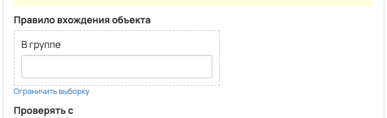
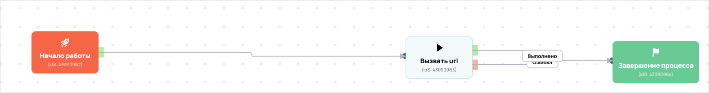

[AMO] [ED] повторы Чекин_ПДО_Авто 101088
- ID процесса:
2473375 - Объект: Пользователи
- Статус: Ожидание событий
Описание из GetCourse
30.06.2026. Подробный ход процесса GetCourse:
Главное: В процесс попадают пользователи из выбранных сегментов GetCourse: 36004473, 36004477.
Процесс работает с объектом GetCourse: Пользователи. Текущий статус процесса: Ожидание событий.
Как идет процесс внутри GetCourse:
- Схема состоит из 17 блоков и 27 переходов.
Конец подробного хода процесса GetCourse.
30.06.2026. Актуальное описание процесса:
Главное: В процесс попадают пользователи из выбранных сегментов GetCourse: 36004473, 36004477.
Процесс работает с объектом GetCourse: Пользователи. Текущий статус процесса: Ожидание событий.
Конец актуального описания процесса.
21.05.2026 Задача: https://spi.bitrix24.ru/online/?IM_TASK=chat24416&IM_MESSAGE=2114864
https://vakas-tools.ru/account/base/amo.php?base_id=101088
повтор - комната https://investorpractic.getcourse.ru/pl/webinar/show?id=3284529 стр входа https://investorpractic.getcourse.ru/pass_d_2
Воронка: ПДО https://investorpractic.amocrm.ru/leads/pipeline/10923418/?skip_filter=Y Этап: Чекин Название в амо: Чекин_ПДО_Авто Тег в амо: Чекин_ПДО_Авто
Правило входа / сегменты:
- ПД на облигациях: segment_id=36004477; дата попадания в сегмент от 19.06.2026
- ПД на облигациях после ПД: segment_id=36004473; дата попадания в сегмент от 19.06.2026 Передача в Vakas: tag=Чекин_ПДО_Авто; timeline_web передается в URL.
19.06.2026 по задаче https://spi.bitrix24.ru/company/personal/user/760/tasks/task/view/7144/ Было: процесс входил по группе 4808200 и отправлял повторную передачу Чекин_ПДО_Авто в Vakas без отдельной метки длительности просмотра. Стало: правило входа процесса переведено на сегменты 36004477 (ПД на облигациях) и 36004473 (ПД на облигациях после ПД) с датой попадания в сегмент от 19.06.2026. Перед Vakas проверяются сегменты длительности просмотра, в timeline_web записывается under_30 / 30_60 / 60_90 / over_90 и передается в Vakas URL. Если пользователь не попал ни в один сегмент времени, процесс идет дальше по старой логике без установки timeline_web. Входные сегменты приведены в текущей задаче: ПД на облигациях — https://investorpractic.getcourse.ru/pl/user/user/index?uc[segment_id]=36004477; ПД на облигациях после ПД — https://investorpractic.getcourse.ru/pl/user/user/index?uc[segment_id]=36004473. Сегменты timeline_web приведены в текущей задаче: after PD under_30 — https://investorpractic.getcourse.ru/pl/user/user/index?uc[segment_id]=36005680; after PD 30_60 — https://investorpractic.getcourse.ru/pl/user/user/index?uc[segment_id]=36005746; after PD 60_90 — https://investorpractic.getcourse.ru/pl/user/user/index?uc[segment_id]=36005781; after PD over_90 — https://investorpractic.getcourse.ru/pl/user/user/index?uc[segment_id]=36005776; ПДО under_30 — https://investorpractic.getcourse.ru/pl/user/user/index?uc[segment_id]=36005929; ПДО 30_60 — https://investorpractic.getcourse.ru/pl/user/user/index?uc[segment_id]=36005934; ПДО 60_90 — https://investorpractic.getcourse.ru/pl/user/user/index?uc[segment_id]=36005935; ПДО over_90 — https://investorpractic.getcourse.ru/pl/user/user/index?uc[segment_id]=36005938.
Понятное описание процесса
- Процесс работает с объектом GetCourse: Пользователи. Текущий статус процесса: Ожидание событий.
- На вход попадают данные так: В процесс попадают пользователи из выбранных сегментов GetCourse: 36004473, 36004477.
- Техническое правило входа в GetCourse: Находится в сегменте (дата: 19.06.2026 - ...) или Находится в сегменте (дата: 19.06.2026 - ...).
- Внутри схемы есть дополнительные проверки/ожидания: 8. Основные блоки: «[timeline_web] under_30 after PD?»; «[timeline_web] under_30 PDO?»; «[timeline_web] 30_60 after PD?»; «[timeline_web] 30_60 PDO?»; «[timeline_web] 60_90 after PD?»; «[timeline_web] 60_90 PDO?».
- Дальше процесс делает прямые вызовы Vakas: 1. Напрямую задействованы базы: 101088.
- Передача: 101088. База 101088: Формы и анкеты. Передаются параметры:
name,email,phone,getcourse_user_id,utm_source,utm_medium,utm_campaign,utm_content,utm_term,commentsи другие. - Что происходит в amoCRM: На входе в этап ПДО -> Чекин [85906974] база ищет дубль и при необходимости переводит найденную сделку в рабочий этап.
Ход процесса в GetCourse
- Схема состоит из 17 блоков и 27 переходов.
- По типам: стартов 1, условий/ожиданий 8, вызовов URL 3, изменений полей 4, финалов 1.
Блоки процесса: что делают и зачем нужны:
- Блок
43090962«Начало работы» (старт). Что делает: Запускает выполнение схемы для объекта, который попал под правило входа процесса. Зачем нужен: Нужен как точка входа: от него GetCourse начинает движение объекта по схеме. Дальше: если результат «Выполнено», идет в «[timeline_web] under_30 after PD?». - Блок
43647507«[timeline_web] under_30 after PD?» (условие). Что делает: Проверяет условие: Находится в сегменте. Зачем нужен: Нужен, чтобы разделить поток: подходящих пользователей/заказы отправить дальше, неподходящих перевести на другую ветку или завершить. Дальше: если результат «Нет», идет в «[timeline_web] under_30 PDO?»; если результат «Да», идет в «[timeline_web] set under_30». - Блок
43647508«[timeline_web] set under_30» (изменение поля). Что делает: меняет полеtimeline_web(Установить равным). значение: under_30 Зачем нужен: Нужен, чтобы записать внутри GetCourse технический признак/значение, которое потом используется в передаче или логике ветвления. Дальше: если результат «Выполнено», идет в «Вызвать url». - Блок
43090963«Вызвать url» (вызов URL). Что делает: Передает в Vakas: 101088. База 101088, канал «Формы и анкеты» (POST); параметры:name,email,phone,getcourse_user_id,utm_source,utm_medium,utm_campaign,utm_content,utm_term,comments,tag,timeline_web; timeout 300 сек. Зачем нужен: Нужен, чтобы передать подходящий объект в 101088. База 101088; дальше На входе в этап ПДО -> Чекин [85906974] база ищет дубль и при необходимости переводит найденную сделку в рабочий этап. Дальше: если результат «Ошибка», идет в «n8n fail после Вызвать url #43090963»; если результат «Выполнено», идет в «n8n success после Вызвать url #43090963». - Блок
43528112«n8n success после Вызвать url #43090963» (вызов URL). Что делает: Пишет событие в n8n: success, action vakas_users (POST); параметры:event,clientED,gcDomain,action,process_id,process_name,entity_type,object_id,user_id,name,email,phone,error_message; timeout 10 сек. Зачем нужен: Нужен для фиксации успешной отправки: n8n получает событие, что Vakas-вызов отработал без ошибки. Дальше: если результат «Ошибка», идет в «Завершение процесса»; если результат «Выполнено», идет в «Завершение процесса». - Блок
43090964«Завершение процесса» (завершение). Что делает: Завершает ветку процесса после выполненных проверок и действий. Зачем нужен: Нужен, чтобы закрыть текущую ветку и не гонять объект по процессу повторно. Дальше переходов нет: это конечная точка ветки. - Блок
43528115«n8n fail после Вызвать url #43090963» (вызов URL). Что делает: Пишет событие в n8n: fail, action vakas_users (POST); параметры:event,clientED,gcDomain,action,process_id,process_name,entity_type,object_id,user_id,name,email,phone,error_message; timeout 10 сек. Зачем нужен: Нужен для контроля ошибки: n8n получает данные неуспешной отправки, чтобы можно было увидеть проблему и повторить/разобрать передачу. Дальше: если результат «Ошибка», идет в «Начало работы»; если результат «Выполнено», идет в «Начало работы». - Блок
43647509«[timeline_web] under_30 PDO?» (условие). Что делает: Проверяет условие: Находится в сегменте. Зачем нужен: Нужен, чтобы разделить поток: подходящих пользователей/заказы отправить дальше, неподходящих перевести на другую ветку или завершить. Дальше: если результат «Нет», идет в «[timeline_web] 30_60 after PD?»; если результат «Да», идет в «[timeline_web] set under_30». - Блок
43647510«[timeline_web] 30_60 after PD?» (условие). Что делает: Проверяет условие: Находится в сегменте. Зачем нужен: Нужен, чтобы разделить поток: подходящих пользователей/заказы отправить дальше, неподходящих перевести на другую ветку или завершить. Дальше: если результат «Нет», идет в «[timeline_web] 30_60 PDO?»; если результат «Да», идет в «[timeline_web] set 30_60». - Блок
43647511«[timeline_web] set 30_60» (изменение поля). Что делает: меняет полеtimeline_web(Установить равным). значение: 30_60 Зачем нужен: Нужен, чтобы записать внутри GetCourse технический признак/значение, которое потом используется в передаче или логике ветвления. Дальше: если результат «Выполнено», идет в «Вызвать url». - Блок
43647512«[timeline_web] 30_60 PDO?» (условие). Что делает: Проверяет условие: Находится в сегменте. Зачем нужен: Нужен, чтобы разделить поток: подходящих пользователей/заказы отправить дальше, неподходящих перевести на другую ветку или завершить. Дальше: если результат «Нет», идет в «[timeline_web] 60_90 after PD?»; если результат «Да», идет в «[timeline_web] set 30_60». - Блок
43647513«[timeline_web] 60_90 after PD?» (условие). Что делает: Проверяет условие: Находится в сегменте. Зачем нужен: Нужен, чтобы разделить поток: подходящих пользователей/заказы отправить дальше, неподходящих перевести на другую ветку или завершить. Дальше: если результат «Нет», идет в «[timeline_web] 60_90 PDO?»; если результат «Да», идет в «[timeline_web] set 60_90». - Блок
43647514«[timeline_web] set 60_90» (изменение поля). Что делает: меняет полеtimeline_web(Установить равным). значение: 60_90 Зачем нужен: Нужен, чтобы записать внутри GetCourse технический признак/значение, которое потом используется в передаче или логике ветвления. Дальше: если результат «Выполнено», идет в «Вызвать url». - Блок
43647515«[timeline_web] 60_90 PDO?» (условие). Что делает: Проверяет ветвление «[timeline_web] 60_90 PDO?», но текст условия в дампе не расшифрован. Зачем нужен: Нужен, чтобы разделить поток: подходящих пользователей/заказы отправить дальше, неподходящих перевести на другую ветку или завершить. Дальше: если результат «Нет», идет в «[timeline_web] over_90 after PD?»; если результат «Да», идет в «[timeline_web] set 60_90». - Блок
43647517«[timeline_web] over_90 after PD?» (условие). Что делает: Проверяет ветвление «[timeline_web] over_90 after PD?», но текст условия в дампе не расшифрован. Зачем нужен: Нужен, чтобы разделить поток: подходящих пользователей/заказы отправить дальше, неподходящих перевести на другую ветку или завершить. Дальше: если результат «Нет», идет в «[timeline_web] over_90 PDO?»; если результат «Да», идет в «[timeline_web] set over_90». - Блок
43647518«[timeline_web] set over_90» (изменение поля). Что делает: меняет полеtimeline_web(Установить равным). значение: over_90 Зачем нужен: Нужен, чтобы записать внутри GetCourse технический признак/значение, которое потом используется в передаче или логике ветвления. Дальше: если результат «Выполнено», идет в «Вызвать url». - Блок
43647519«[timeline_web] over_90 PDO?» (условие). Что делает: Проверяет ветвление «[timeline_web] over_90 PDO?», но текст условия в дампе не расшифрован. Зачем нужен: Нужен, чтобы разделить поток: подходящих пользователей/заказы отправить дальше, неподходящих перевести на другую ветку или завершить. Дальше: если результат «Нет», идет в «Вызвать url»; если результат «Да», идет в «[timeline_web] set over_90».
Скриншоты процесса


Откуда: процесс берет объекты по правилу входа «В группе (ID: 4808200)».
Что проверяет по пути: перед отправкой в база 101088 (Пользователи и визиты).
Куда ведет: вызывает внешний URL Vakas и передает данные в база 101088 (Пользователи и визиты).
Логика Vakas и amoCRM
- Условие входа в процесс: Находится в сегменте (дата: 19.06.2026 - ...) или Находится в сегменте (дата: 19.06.2026 - ...).
- Вызовов Vakas в схеме:
1. Уникальных URL Vakas:1. Связанных баз:1.
Связанная база Vakas: 101088. База 101088
- Использование в процессе: Формы и анкеты
- Документация базы: 101088. База 101088
- Страница настройки: Vakas
- Поиск дублей: Проверять на дубли
- Искать только в выбранных воронках: 1
- Ответственный по контакту имеет приоритет: Нет
Вызовы из процесса
Вызвать url
- Endpoint:
sendform - URL вызова:
https://vakas-tools.ru/base/sendform/8927217/101088/?name={object.name}&email={object.email}&phone={object.phone}&getcourse_user_id={object.id}&utm_source={object.create_session.utm_source}&utm_medium={object.create_session.utm_medium}&utm_campaign={object.create_session.utm_campaign}&utm_content={object.create_session.utm_content}&utm_term={object.create_session.utm_term}&comments={object.webinar_user_comments}&tag=Чекин_ПДО_Авто&timeline_web={object.timeline_web} - Связанная база Vakas: 101088. База 101088
Когда срабатывает в процессе
- Сценарий 1:
Начало работы--Выполнено-->[timeline_web] under_30 after PD?--Нет-->[timeline_web] under_30 PDO?--Нет-->[timeline_web] 30_60 after PD?--Нет-->[timeline_web] 30_60 PDO?--Нет-->[timeline_web] 60_90 after PD?--Нет-->[timeline_web] 60_90 PDO?--Нет-->[timeline_web] over_90 after PD?--Нет-->[timeline_web] over_90 PDO?--Нет-->Вызвать url- условие
[timeline_web] under_30 after PD?: Находится в сегменте ->Нет - условие
[timeline_web] under_30 PDO?: Находится в сегменте ->Нет - условие
[timeline_web] 30_60 after PD?: Находится в сегменте ->Нет - условие
[timeline_web] 30_60 PDO?: Находится в сегменте ->Нет - условие
[timeline_web] 60_90 after PD?: Находится в сегменте ->Нет - условие
[timeline_web] 60_90 PDO?: условие без текстовой расшифровки ->Нет - условие
[timeline_web] over_90 after PD?: условие без текстовой расшифровки ->Нет - условие
[timeline_web] over_90 PDO?: условие без текстовой расшифровки ->Нет
- условие
- Сценарий 2:
Начало работы--Выполнено-->[timeline_web] under_30 after PD?--Нет-->[timeline_web] under_30 PDO?--Нет-->[timeline_web] 30_60 after PD?--Нет-->[timeline_web] 30_60 PDO?--Нет-->[timeline_web] 60_90 after PD?--Нет-->[timeline_web] 60_90 PDO?--Нет-->[timeline_web] over_90 after PD?--Нет-->[timeline_web] over_90 PDO?--Да-->[timeline_web] set over_90--Выполнено-->Вызвать url- условие
[timeline_web] under_30 after PD?: Находится в сегменте ->Нет - условие
[timeline_web] under_30 PDO?: Находится в сегменте ->Нет - условие
[timeline_web] 30_60 after PD?: Находится в сегменте ->Нет - условие
[timeline_web] 30_60 PDO?: Находится в сегменте ->Нет - условие
[timeline_web] 60_90 after PD?: Находится в сегменте ->Нет - условие
[timeline_web] 60_90 PDO?: условие без текстовой расшифровки ->Нет - условие
[timeline_web] over_90 after PD?: условие без текстовой расшифровки ->Нет - условие
[timeline_web] over_90 PDO?: условие без текстовой расшифровки ->Да
- условие
- Сценарий 3:
Начало работы--Выполнено-->[timeline_web] under_30 after PD?--Нет-->[timeline_web] under_30 PDO?--Нет-->[timeline_web] 30_60 after PD?--Нет-->[timeline_web] 30_60 PDO?--Нет-->[timeline_web] 60_90 after PD?--Нет-->[timeline_web] 60_90 PDO?--Нет-->[timeline_web] over_90 after PD?--Да-->[timeline_web] set over_90--Выполнено-->Вызвать url- условие
[timeline_web] under_30 after PD?: Находится в сегменте ->Нет - условие
[timeline_web] under_30 PDO?: Находится в сегменте ->Нет - условие
[timeline_web] 30_60 after PD?: Находится в сегменте ->Нет - условие
[timeline_web] 30_60 PDO?: Находится в сегменте ->Нет - условие
[timeline_web] 60_90 after PD?: Находится в сегменте ->Нет - условие
[timeline_web] 60_90 PDO?: условие без текстовой расшифровки ->Нет - условие
[timeline_web] over_90 after PD?: условие без текстовой расшифровки ->Да
- условие
- Сценарий 4:
Начало работы--Выполнено-->[timeline_web] under_30 after PD?--Нет-->[timeline_web] under_30 PDO?--Нет-->[timeline_web] 30_60 after PD?--Нет-->[timeline_web] 30_60 PDO?--Нет-->[timeline_web] 60_90 after PD?--Нет-->[timeline_web] 60_90 PDO?--Да-->[timeline_web] set 60_90--Выполнено-->Вызвать url- условие
[timeline_web] under_30 after PD?: Находится в сегменте ->Нет - условие
[timeline_web] under_30 PDO?: Находится в сегменте ->Нет - условие
[timeline_web] 30_60 after PD?: Находится в сегменте ->Нет - условие
[timeline_web] 30_60 PDO?: Находится в сегменте ->Нет - условие
[timeline_web] 60_90 after PD?: Находится в сегменте ->Нет - условие
[timeline_web] 60_90 PDO?: условие без текстовой расшифровки ->Да
- условие
- Сценарий 5:
Начало работы--Выполнено-->[timeline_web] under_30 after PD?--Нет-->[timeline_web] under_30 PDO?--Нет-->[timeline_web] 30_60 after PD?--Нет-->[timeline_web] 30_60 PDO?--Нет-->[timeline_web] 60_90 after PD?--Да-->[timeline_web] set 60_90--Выполнено-->Вызвать url- условие
[timeline_web] under_30 after PD?: Находится в сегменте ->Нет - условие
[timeline_web] under_30 PDO?: Находится в сегменте ->Нет - условие
[timeline_web] 30_60 after PD?: Находится в сегменте ->Нет - условие
[timeline_web] 30_60 PDO?: Находится в сегменте ->Нет - условие
[timeline_web] 60_90 after PD?: Находится в сегменте ->Да
- условие
- Сценарий 6:
Начало работы--Выполнено-->[timeline_web] under_30 after PD?--Нет-->[timeline_web] under_30 PDO?--Нет-->[timeline_web] 30_60 after PD?--Нет-->[timeline_web] 30_60 PDO?--Да-->[timeline_web] set 30_60--Выполнено-->Вызвать url- условие
[timeline_web] under_30 after PD?: Находится в сегменте ->Нет - условие
[timeline_web] under_30 PDO?: Находится в сегменте ->Нет - условие
[timeline_web] 30_60 after PD?: Находится в сегменте ->Нет - условие
[timeline_web] 30_60 PDO?: Находится в сегменте ->Да
- условие
- Сценарий 7:
Начало работы--Выполнено-->[timeline_web] under_30 after PD?--Нет-->[timeline_web] under_30 PDO?--Нет-->[timeline_web] 30_60 after PD?--Да-->[timeline_web] set 30_60--Выполнено-->Вызвать url- условие
[timeline_web] under_30 after PD?: Находится в сегменте ->Нет - условие
[timeline_web] under_30 PDO?: Находится в сегменте ->Нет - условие
[timeline_web] 30_60 after PD?: Находится в сегменте ->Да
- условие
- Сценарий 8:
Начало работы--Выполнено-->[timeline_web] under_30 after PD?--Нет-->[timeline_web] under_30 PDO?--Да-->[timeline_web] set under_30--Выполнено-->Вызвать url- условие
[timeline_web] under_30 after PD?: Находится в сегменте ->Нет - условие
[timeline_web] under_30 PDO?: Находится в сегменте ->Да
- условие
Что уходит в Vakas
nameemailphonegetcourse_user_idutm_sourceutm_mediumutm_campaignutm_contentutm_termcommentstagtimeline_web
Как база обработает вызов и что будет в amoCRM
- Логика создания сделки: сначала ищется существующая сделка/контакт по правилам базы; если подходящая сделка найдена, обновляется она, иначе создается новая.
- Режим проверки дублей: Проверять на дубли
- Искать дубль только в выбранных воронках: 1 шт.
- Учитывать закрытые этапы при поиске дубля: нет
- Добавлять телефон/email в найденный контакт: Нет
- Менять имя контакта при обновлении: Нет
ПДО [10923418]- Автоотправка регистраций в amoCRM: Да
- Базовый этап: ПДО -> Чекин [85906974]
- Этапы, из которых разрешен сдвиг: 11 этапов
- Менять название сделки при обновлении: Да
- Менять имя контакта при обновлении: Нет
- Ответственный по умолчанию: EasyDrafting[12985298]
- Всегда менять ответственного: Нет
- Теги сделки: Чекин_ПДО_Авто
- Индивидуальные правила маршрутизации: нет